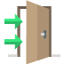

مرجع
الطلاب
الجدد
مدرس;
درس
جدولة
التقويم
بيانات
الطالب
حضور
تقييم
التخرج
الدرجة
الرياضات
تقرير
امان
اسمك
تسجيل خروج
 Proses الطلاب
الجدد
مجموعة الطلاب المحتملين
جمع البيانات للطلاب المحتملين
العام الدراسي الجديد
البحث عن الطلاب المحتملين
Statistik الطلاب
الجدد
تنسيب طالب جديد
Konfigurasi Pendataan الطلاب
الجدد
النص الأصلي
تقييم هذه الترجمة
سيتم استخدام ملاحظاتك وآرائك للمساعدة في تحسين "ترجمة Google".